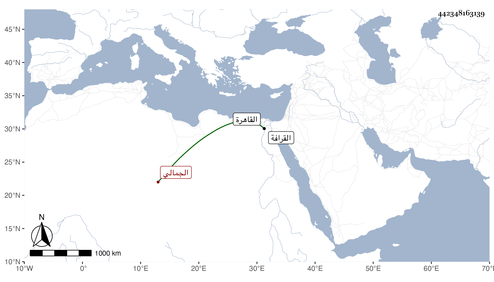

0902Sakhawi.DawLamic.ITO20230111-ara1.EIS1600.442348163139
Biography ID: 442348163139
93
أبو بكر بن سنقر سيف الدين الجمالي أحد الأمراء الحجاب بالقاهرة . ولي إمرة الحج مرارا بعد موت خاله بهادر الجمالي وكانت فيه مداراة ولم تكن له حرمة . مات في سنة ثلاث . ذكره شيخنا في أنبائه وقال العيني كان جيدا قليل الأذى كثير البر متواضعا ذا مسكة محبا في العلماء معتقدا للفقراء مع تغفل وعين وفاته بيوم الجمعة ثالث عشر جمادى الأولى وذكره المقريزي في عقوده فقال الأمير سيف الدين بن الأمير شمس الدين الجمالي ويعرف بسيدي أبي بكر أمير حاج وقال إنه دفن بالقرافة وكان لينا غير مهاب إلا أنه كان يسوس العربان بالرغبة والرهبة والإحسان فتمشي أحواله معهم .
